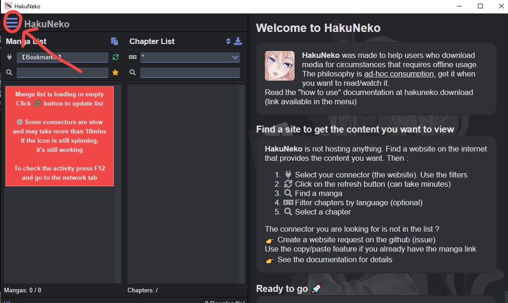
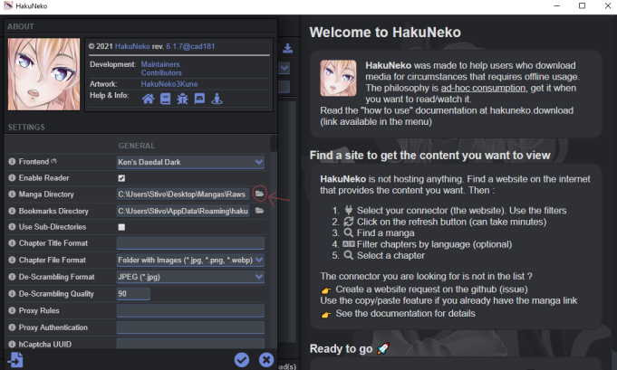
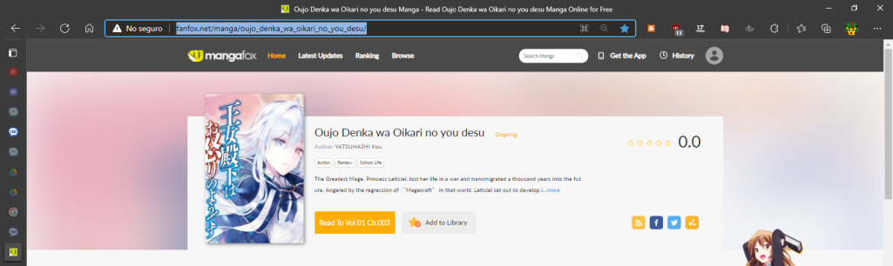
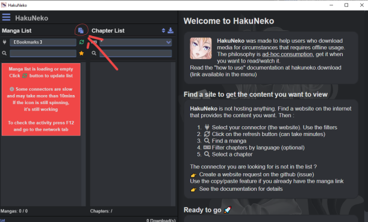
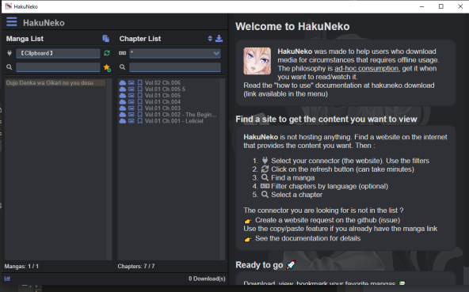

Tutorial de Haku Neko, para descargar caps o tomos enteros de una:
Después de instalar ingresas a haku neko: presionas en el menú ≡
Seleccionas en donde guardar los caps. Haku Neko creará una carpeta con el nombre del manga guardará las imágenes en esa carpeta.
Copias el link del manga:
Presionamos aquí y se pegará el link:
Después presionas el nombre de la izquierda y desplegará la lista de capítulos:
Y por ultimo solo tienes que presionar la nube del capítulo que quieras descargar. todo se guardará en orden en la carpeta que seleccionaste.
Aveces no descarga una hoja lo que tienes que hacer es simplemente borrar el archivo bin que descargo de esa hoja darle otra vez en la nube o borrar lo descargado y volverlo a descargar.